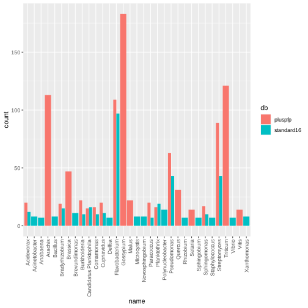

CLIMB-BIG-DATA: Metagenomics in Brum#
In this tutorial we will look at some metagenomics sequences that were sequenced from DNA extracted from the Worcester and Birmingham Canal at the University of Birmingham. In this case the canal water was fetched, DNA extracted and data was generated on the Oxford Nanopore MinION sequencing platform by Josh Quick.

The Worcester and Birmingham Canal near University Station (photo by Philip Halling)
Before you begin#
This tutorial assumes you are working on CLIMB-BIG-DATA in a JupyterHub notebook. That is why many of the commands are prepended with the "!" (exclamation mark) symbol - which tells the notebook to run the command as if it was on the command line.
You could do the tutorial without JupyterHub notebooks in the Terminal, in which case remove the "!" before each command.
Have a look around this documentation site if you would like to understand more about what a JupyterHub notebook is.
Setting up the environment#
When working on CLIMB-BIG-DATA with Conda, always work in a new Conda environment. You will not be able to add software to the base environment.
We speed the process along by using mamba, a drop-in replacement for conda to create a new environment.
Our environment will be called metagenomics-tutorial.
In order for this tutorial to function correctly within JupyterHub, also install ipykernel.
!mamba create -y -n metagenomics-tutorial ipykernel
Next, we will need the following software:
kraken2- a taxonomic profiler for metagenomics datakrona- an interactive visualiser for the output of Kraken2krakentools- some useful scripts for manipulating Kraken2 outputtaxpasta- a useful tool for converting and merging Kraken2 outputs into other formats like Excel
!mamba install -y kraken2 krona blast krakentools
Krona reminds us to run ktUpdateTaxonomy.sh before it can be used.
!ktUpdateTaxonomy.sh
Let's grab the CanalSeq data.
This is available from the following link.
Note that this link is served via the CLIMB S3 service. You can serve your own public data the same way simply by creating a public S3 bucket and uploading files to it!
Running Kraken2#
You can test kraken2 was installed correctly by running it with no command-line options.
!kraken2
Pre-computed Kraken2 databases are available on the /shared/public file system within CLIMB-BIG-DATA. These databases are downloaded from Ben Langmad's publicly available Kraken2 indexes page. These datasets are updated regularly and we will keep all versions that we download available permenantly. Within each database directory latest will always point towards the latest version available.
The /shared/public area is designed to store frequently used, important databases for the microbial genomics community. We are just getting started building this resource so please contact us with suggestions for other databases you would like to see here.
We can take a look at the latest versions of the databases that are available, and their sizes:
!du -h /shared/public/db/kraken2/*/latest/
11G /shared/public/db/kraken2/eupathDB46/latest/ 9.6G /shared/public/db/kraken2/minusb/latest/ 743G /shared/public/db/kraken2/nt/latest/ 15G /shared/public/db/kraken2/pluspf_16gb/latest/ 7.6G /shared/public/db/kraken2/pluspf_8gb/latest/ 75G /shared/public/db/kraken2/pluspf/latest/ 16G /shared/public/db/kraken2/pluspfp_16gb/latest/ 7.9G /shared/public/db/kraken2/pluspfp_8gb/latest/ 169G /shared/public/db/kraken2/pluspfp/latest/ 15G /shared/public/db/kraken2/standard_16gb/latest/ 7.6G /shared/public/db/kraken2/standard_8gb/latest/ 70G /shared/public/db/kraken2/standard/latest/ 633M /shared/public/db/kraken2/viral/latest/
We can run Kraken2 directly within this JupyterHub notebook which is running in a container. A standard container has 8 CPu cores and 64Gb of memory. Kraken2 doesn't run well unless the database fits into memory, so we can use one of the smaller databases for now such as standard_16gb which contains archaea, bacteria, viral, plasmid, human and UniVec_Core sequences from RefSeq, but subsampled down to a 16Gb database. This will be fast, but we trade off specificity and sensitivity against bigger databases.
!kraken2 --threads 8 \
--db /shared/public/db/kraken2/standard_16gb/latest \
--output canalseq.hits.txt \
--report canalseq.report.txt \
canalseq.fasta
Loading database information... done.
37407 sequences (91.32 Mbp) processed in 4.876s (460.3 Kseq/m, 1123.76 Mbp/m).
12486 sequences classified (33.38%)
24921 sequences unclassified (66.62%)
About a third of sequences were classified and two-thirds were not.
The canalseq.report.txt gives a human-readable output from Kraken2.
!cat canalseq.report.txt
People worry about getting Leptospirosis if they swim in the canal. Any evidence of Leptospira sp. in these results?
!grep Leptospira canalseq.report.txt
0.03 10 0 O 1643688 Leptospirales
0.03 10 0 F 170 Leptospiraceae
0.02 9 2 G 171 Leptospira
0.01 2 2 S 173 Leptospira interrogans
0.00 1 1 S 28182 Leptospira noguchii
0.00 1 1 S 28183 Leptospira santarosai
0.00 1 1 S 1917830 Leptospira kobayashii
0.00 1 1 S 2564040 Leptospira tipperaryensis
0.00 1 0 G1 2633828 unclassified Leptospira
0.00 1 1 S 1513297 Leptospira sp. GIMC2001
Eek!#
It's easier to look at Kraken2 results visually using a Krona plot:
!ktImportTaxonomy -t 5 -m 3 canalseq.report.txt -o KronaReport.html
[ WARNING ] Score column already in use; not reading scores.
Loading taxonomy...
Importing canalseq.report.txt...
Writing KronaReport.html...
We can look at the Krona report directly within the browser by using the file navigator to the left - open up the KronaReport.html within the shared-team directory where we are working. Click around the Krona report to see what is in there.
With the extract_kraken_reads.py script in krakentools we can quite easily extract a set of reads that we are interested in for further exploration: perhaps to use a more specific method like BLAST against a large protein database, or to extract for de novo assembly.
!extract_kraken_reads.py -k canalseq.hits.txt -s canalseq.fasta -r canalseq.report.txt -t 171 -o leptospira.fasta --include-children
!extract_kraken_reads.py -k canalseq.hits.txt -s canalseq.fasta -r canalseq.report.txt -t 173 -o linterrogens.fasta --include-children
PROGRAM START TIME: 04-16-2023 18:40:00
>> STEP 0: PARSING REPORT FILE canalseq.report.txt
1 taxonomy IDs to parse
>> STEP 1: PARSING KRAKEN FILE FOR READIDS canalseq.hits.txt
0.04 million reads processed
2 read IDs saved
>> STEP 2: READING SEQUENCE FILES AND WRITING READS
2 read IDs found (0.02 mill reads processed)
2 reads printed to file
Generated file: linterrogens.fasta
PROGRAM END TIME: 04-16-2023 18:40:00
!cat leptospira.fasta
If you wished you could go and take these reads and BLAST them over at NCBI-BLAST. There is also the nr BLAST database available on CLIMB-BIG-DATA if you wanted to run blastx on them. The BLAST databases are found in /shared/public/db/blast.
It was a bit disappointing that only 33% of the reads in our dataset were assigned. We could try a much bigger database than standard_16gb such as pluspfp which contains protozoal, fungal and plant sequences, as well as taxa contained in standard.
To do this we will need to use the Kubernetes cluster in CLIMB-BIG-DATA. With the Kubernetes cluster we can run much bigger tasks requiring much more CPU power, or more memory than in a notebook container like this.
The easiest way to get started with Kubernetes is using Nextflow.
When you run a Nextflow script it will automagically use Kubernetes.
There are a few Kraken2 Nextflow scripts, the simplest one I have found is metashot/kraken2. This will also do a few extra steps like running Bracken.
If you wanted to run Kraken2 through Nextflow the same way as before you could run:
!nextflow run metashot/kraken2 \
-c /etc/nextflow.config \
--reads canalseq.fastq \
--kraken2_db /shared/public/db/kraken2/standard_16gb/latest \
--read_len 100 \
--outdir canalseq-standard16 \
--single_end
But - and for our final trick - we would like to use a much bigger database pluspfp. We can just re-check it's size.
!du -h -d1 /shared/public/db/kraken2/pluspfp/latest
As this database is around 145Gb, we can ask Nextflow to give us 200 gigabytes of RAM when running this container, to ensure this database fits easily in memory. We could also ask for a lot more CPUs to speed things along further! Nextflow and Kubernetes will take care of finding a machine the best size for this workflow.
!nextflow run metashot/kraken2 \
-c /etc/nextflow.config \
--reads canalseq.fasta \
--kraken2_db /shared/public/db/kraken2/pluspfp/latest \
--read_len 100 \
--outdir canalseq-pluspfp \
--single_end \
--max_memory 200.G \
--max_cpus 64
Ah, OK this gives 80% assignment! We can go and take a look at this in Krona again.
!ktImportTaxonomy -t 5 -m 3 -o krona-canalseq-pluspfp.html canalseq-pluspfp/kraken2/canalseq.kraken2.report
[ WARNING ] Score column already in use; not reading scores.
Loading taxonomy...
Importing canalseq-pluspfp/kraken2/canalseq.kraken2.report...
[ WARNING ] The following taxonomy IDs were not found in the local
database and were set to root (if they were recently added to
NCBI, use updateTaxonomy.sh to update the local database):
42857
Writing krona-canalseq-pluspfp.html...
Lots more taxa to explore if you open up krona-canalseq-pluspfp.htm in the browser on the left!
R and RStudio#
Let's finish up by comparing the results of Kraken2 using the standard-16 database versus the full-fat PlusPFP database!
We can use a nice little tool called taxpasta to take the results of the two Kraken2 runs, merge them together and write out a tabular format file that will load easily into R.
!cp canalseq-pluspfp/kraken2/canalseq.kraken2.report pluspfp.report
!cp canalseq-standard16/kraken2/canalseq.kraken2.report standard16.report
!taxpasta merge --profiler kraken2 --output-format tsv --add-name --add-rank --taxonomy /shared/public/db/taxonomy/latest -o canalseq.merged.tsv pluspfp.report standard16.report
Now we can do some magic with R.
For the next part, either change the running kernel type (using the dropdown menu on the top right) to "R", or flip over to RStudio (via File - New Launcher in the menu bar).
library(tidyverse)
UsageError: Cell magic `%%R` not found.
df = read_tsv("canalseq.merged.tsv", show_col_types=F)
head(df)
| taxonomy_id | name | rank | pluspfp | standard16 |
|---|---|---|---|---|
| <dbl> | <chr> | <chr> | <dbl> | <dbl> |
| 0 | NA | NA | 7751 | 24921 |
| 1 | root | no rank | 45 | 20 |
| 131567 | cellular organisms | no rank | 2167 | 381 |
| 2759 | Eukaryota | superkingdom | 742 | 1 |
| 33090 | Viridiplantae | kingdom | 12 | 0 |
| 35493 | Streptophyta | phylum | 0 | 0 |
A bit of tidyverse magic can plot us the top 20 genera for each of the Kraken2 databases used side by side.
df %>%
gather(key="db", val="count", 4:5) %>%
filter(rank=='genus') %>%
slice_max(n=20, count, by="db") %>%
ggplot(., aes(x=name, y=count, fill=db)) +
geom_bar(stat='identity', position="dodge") +
theme(axis.text.x = element_text(angle = 90, vjust = 0.5, hjust=1))

And that's the end of the tutorial.